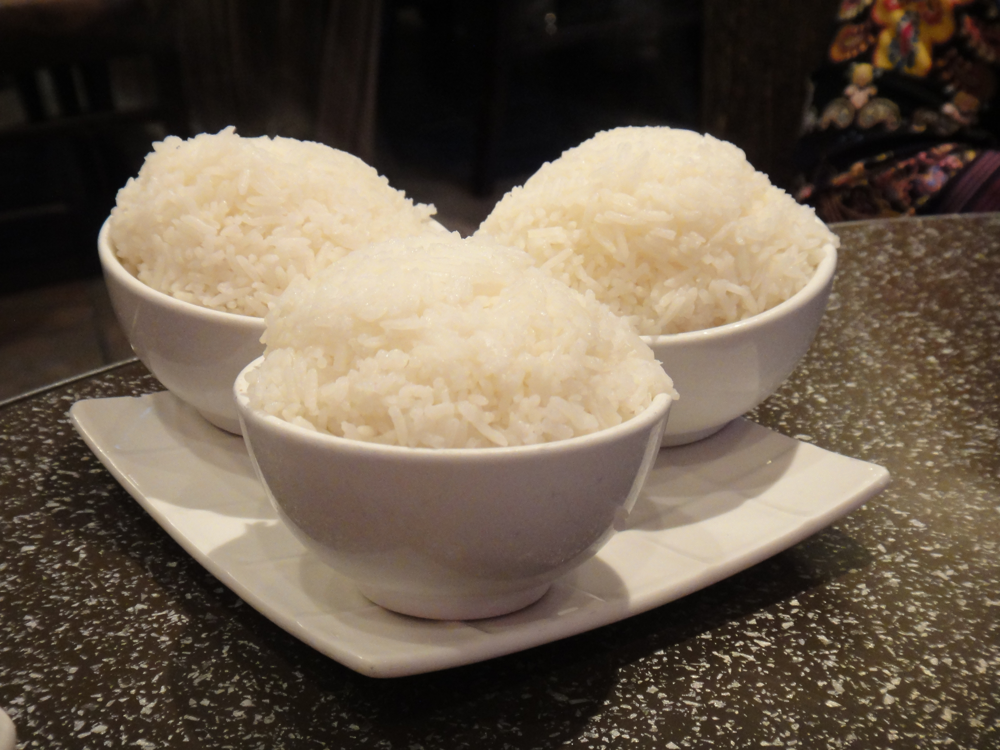

White Rice

Description:
This recipe describes the steps to make
some white rice that is fluffy.
Ingredients
- Uncooked white rice
- Water
Steps
- Scoop out 2 and a half cups of white rice into
the rice cooker pot.
- Pour water into pot and rinse the rice.
Drain the water and any other debris.
-
Repeat step 2 at least 3 times, until only rice remains.
-
Add water up to the 3 tick in the rice cooker pot.
-
Cook rice on normal
- Enjoy!